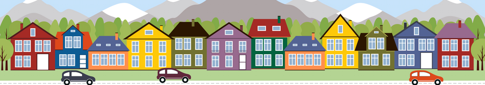
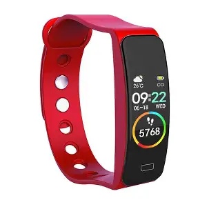

Projects Gallery
Enterprise solutions and technical articles that drive real business impact
Sales Analysis
A unified Power BI solution providing real-time insights.

Personal ProjectHouse Price Prediction
A personal project to predict house prices using advanced regression techniques and feature engineering.
Automated Email Routing
An AI agent that monitors an inbox and automatically classifies and summarises emails, forwarding to the appropriate team or sending an automated reply.

Exploratory AnalysisSmart Device Analysis
Analysis of smart device data using SQL to identify insights and make strategic recommendations.
Football Data Analysis
Analysis of match performance data using Pandas, NumPy, and Matplotlib to identify trends and insights.